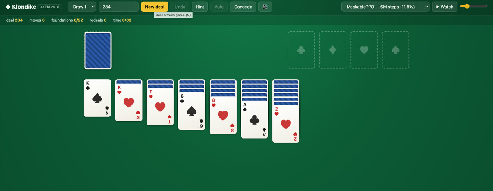

Agents that learn Klondike from raw game state
Masked DQN and MaskablePPO read state vectors, never pixels, pick only legal moves, and are scored on the same 1000 fixed deals as a deterministic heuristic.
Headline result
On the same 1000 deals, the rule-based heuristic wins 41.4%. The best single trained policy wins 35.3%; a declared best-of-26 portfolio, 62.5%.
Portfolio means every member plays every deal and the best episode-observable outcome is reported (win, then foundations, then moves): a declared best-of-N system, not one model. A per-move vote of three models reaches 38.0%. With the heuristic as a member the portfolio reaches 64.5%; the nine committed checkpoints alone measure 57.9%. Plain MaskablePPO plateaus at 11.8%.
All 1000 deals, one cell each
The benchmark is seeds 0 to 999, fixed in benchmarks/deals.json; training only ever deals seeds from 1,000,000 up. Light a policy to see which deals it won, or pick a deal to see how every policy did on it.
How the win rate climbed
Plain MaskablePPO plateaus
Compact 132-dim observation, six million steps on CPU. Three million more steps changed nothing. Perfect information, the upper bound of what seeing every hidden card adds, reaches only 17.7%: observability is not the main bottleneck.
11.8% MaskablePPO, 6M steps, compact POMDP
- Action masking: every legal move is reachable, illegal moves never are
- Losses are overwhelmingly no_progress_cycle
- One-hot 49k-dim observation: 0.000, untrainable at this budget
- Plain PPO
- Imitation anchor
- Peak chains
- Vote of three
- Portfolio

Every number, the same 1000 deals
| Policy | Observation | Draw-1 | Draw-3 |
|---|---|---|---|
| random_legal | none | 0.0% | 0.0% |
| heuristic (rule-based) | none | 41.4% | 11.8% |
| masked DQN, 250k steps | compact | 5.8% | not run |
| MaskablePPO, 6M steps | compact POMDP | 11.8% | not run |
| MaskablePPO, 6M steps | compact, perfect info | 17.7% | not run |
| PPO + BC warm-start, 3M | compact + hint | 26.5% | not run |
| PPO amplified chain, about 8M | compact + hint | 35.3% | not run |
| Ensemble vote of 3 | compact + hint | 38.0% | not run |
| Portfolio of 26 RL, best-of-N, declared | compact + hint | 62.5% | not run |
| Portfolio + heuristic member | compact + hint | 64.5% | not run |
| Portfolio of 9 committed checkpoints | compact + hint | 57.9% | not run |
What did not work
| Experiment | Result | Reading |
|---|---|---|
| One-hot 49k-dim observation, DQN and PPO | 0.000 | Untrainable at laptop budget; the compact 132-dim code made it trainable |
| Masked Double-DQN on hint obs, 1M steps | 0.000 | The new recipe does not rescue the value-based family |
| MaskableQRDQN, distributional | 0.067 at 400k | Then collapses to about 0; the bootstrap max is unmasked. Still adds deals to the portfolio |
| Curriculum on heuristic-winnable deals | 0.129 | Overfits the easy subset; no benefit on the benchmark |
| BC warm-start alone, Tanh | 0.142 | Warm start does not stick without the hint observation |
| Bigger net, 512 by 2 | 0.287 | Capacity is not the bottleneck, trajectory position is |
| Mixed-observation vote | 0.321 | Weak voters drag the vote down |
| Ensemble distilled into one student | 0.332 | The vote's edge lives in diversity, not in compressible regularities |
| Determinized rollout search, seeds 0 to 199 | 0.335 | Worse than the raw policy (0.345 there); sampled hidden cards add noise |
| Value-head member selector | 0.343 | Value cannot predict which member wins a deal |

results/figs/leaderboard.png. Gold bars are declared portfolios, grey is the heuristic, blue are single policies and the vote.Recorded on benchmark deals
Rendered from environment state by record.py. The agent never sees these frames, only its observation vector; every frame is a masked action the policy chose. Point at or tap a tile to play it.
-
Deal 47Win
Single-model champion, 35.3%
-
Deal 47Win
Masked DQN, 5.8%
-
Deal 105Win
Portfolio member divA
-
Deal 105Win
Sparse-reward lineage; the champion loses it
-
Deal 14Concede
Masked DQN resigns a hopeless deal on its own
-
Deal 0No-progress cycle
Single-model champion, an honest loss

Play it on your machine
The playable game is a FastAPI app over the same Python rules engine the tests and evals use; there is deliberately no JavaScript port of the rules that could drift. That is why it runs locally and not on this page. Drag and drop, undo, hint, draw-1 or draw-3, seeded deals.
Watch hands the live board to the heuristic, masked DQN, MaskablePPO or perfect-info PPO, rebuilding the policy's own observation from the game's action history, so what you watch is what was benchmarked. Deals PPO wins: 284, 118, 161, 211.
# uv syncs deps on first run
./run_web.sh
# then open http://localhost:8080The benchmark and the choices behind it
- Deals
- 1000, seeds 0 to 999, fixed in
benchmarks/deals.json. Draw-1 is the headline variant; draw-3 is implemented too. - Training seeds
- 1,000,000 and up, so training and benchmark deals are disjoint by construction.
- Actions
- Discrete(654): draw, waste, foundation and every tableau move, plus
CONCEDE. The mask equals the legal moves plus concede, tested on 10,000 random states. - Observation
- Compact 132 dims (142 with the hint), frame stack of 8. Stock order and face-down cards stay hidden.
- Episodes
- Capped at 500 actions; end on a win, a concede, no moves, a repeated board or 150 moves without progress.
- Evaluation
eval.py, greedy masked play on all 1000 deals; one JSON per run inresults/.- Compute
- One laptop CPU, Apple silicon, 8 cores. No GPU, no distributed training.
- Concede is always legal. An agent can resign even when moves remain; the trained DQN resigned 64 of 1000 deals in its continuation eval.
- The random baseline never concedes. The interesting floor is a random player that does not quit on purpose. It wins 0 of 1000.
- Cycle detection sees the full board, stock order included, but never feeds it to the observation; POMDP correctness is tested.
- DQN is hand-rolled Double-DQN with the mask applied at sampling and target time, so the argmax never picks an illegal move.
- 150 idle moves end an episode: enough not to cut off winning games (about 230 moves per heuristic win), tight enough to end loops.
- The web app serves the Python engine itself, so there is zero rules duplication between what you play and what was measured.
Reproduce it
Python 3.11 or newer and uv. The committed checkpoints come with the clone (about 200 MB), so evaluating them needs no training.
git clone https://github.com/Matthew-Eucaristo/solitaire-rl
cd solitaire-rl
uv sync --extra dev
.venv/bin/python -m pytest -q # 54 tests
.venv/bin/python eval.py --policy heuristic --deals 1000 --variant draw1 --jobs 8
.venv/bin/python eval.py --policy ppo:checkpoints/ppo_compact_6m.zip --obs compact
bash scripts/reproduce.sh # M0–M3 checks, under 30 minThe canonical 57.9% portfolio, every member from checkpoints/. Each member plays every deal.
.venv/bin/python eval.py --obs compact_hint --deals 1000 --jobs 4 --policy \
'portfolio:ppo:checkpoints/ppo_amp1_9m_1p6m.zip,ppo:checkpoints/ppo_divC.zip,ppo:checkpoints/ppo_divD.zip,ppo:checkpoints/ppo_sparse.zip,ppo:checkpoints/ppo_amp512.zip,ppo:checkpoints/ppo_bcxl.zip,ppo:checkpoints/ppo_bcxllr6m.zip,ppo:checkpoints/ppo_hintbc.zip,qrdqn:checkpoints/qrdqn_400000.pt'Train your own. Both scripts write metrics.csv, TensorBoard logs and config.json with the git hash into runs/.
.venv/bin/python train_ppo.py --obs compact --steps 3000000 --n-envs 8 --out runs/ppo
.venv/bin/python train_dqn.py --obs compact --steps 250000 --out runs/dqnThe paper, or the code?
The draft in paper/ writes up the methods, results and every negative result; it has not been submitted to a venue.